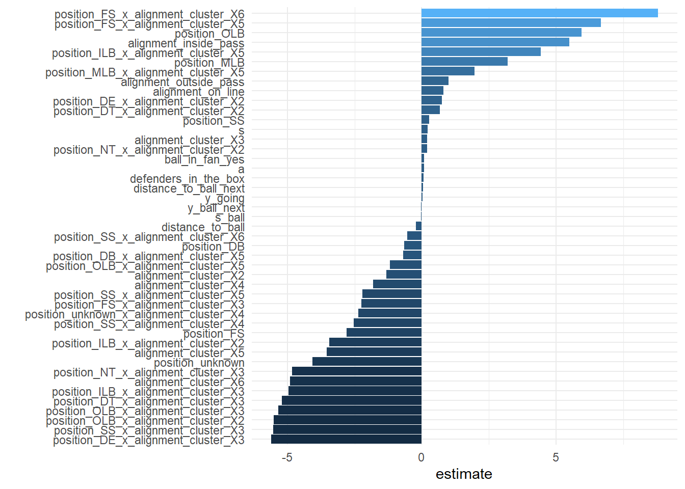
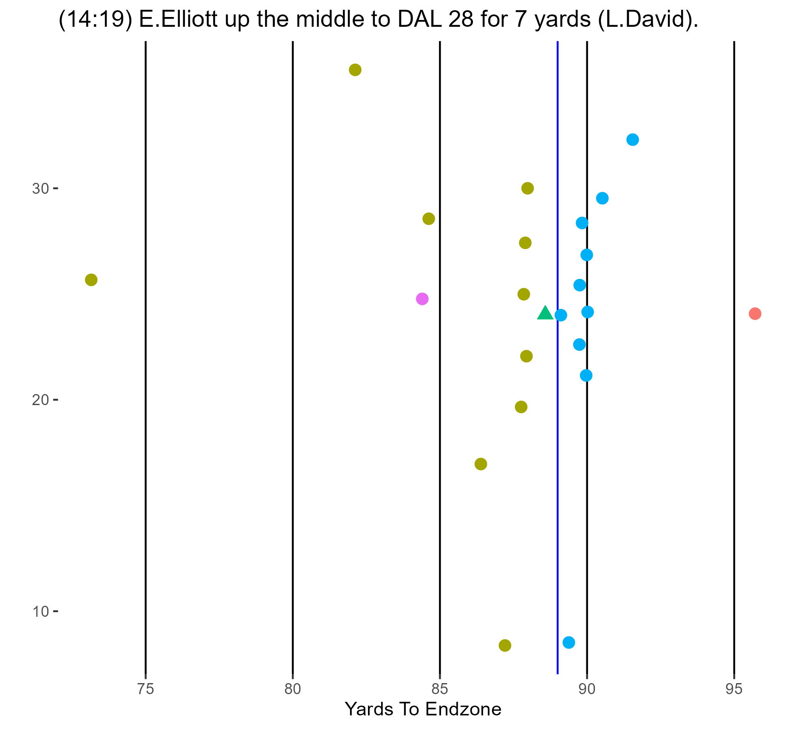
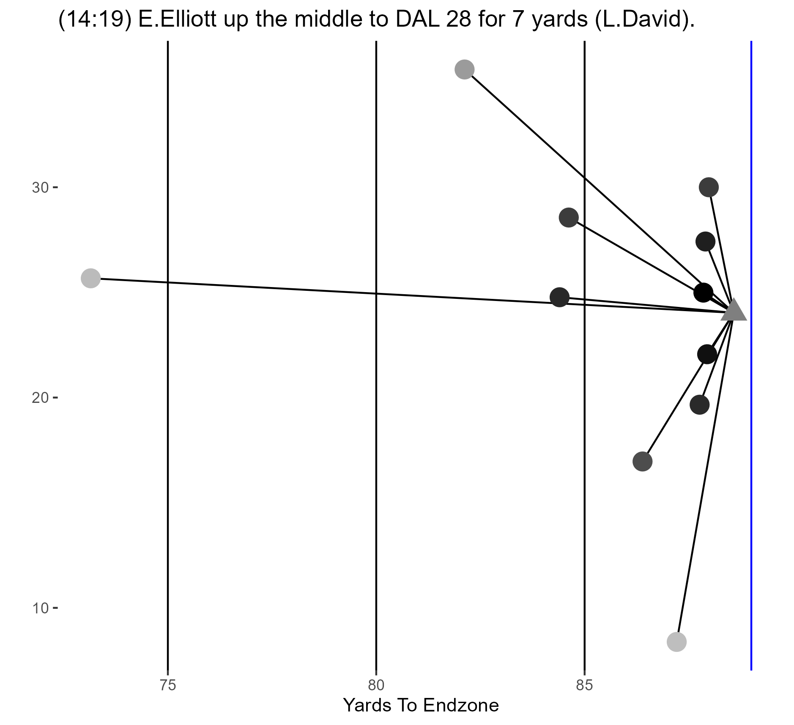
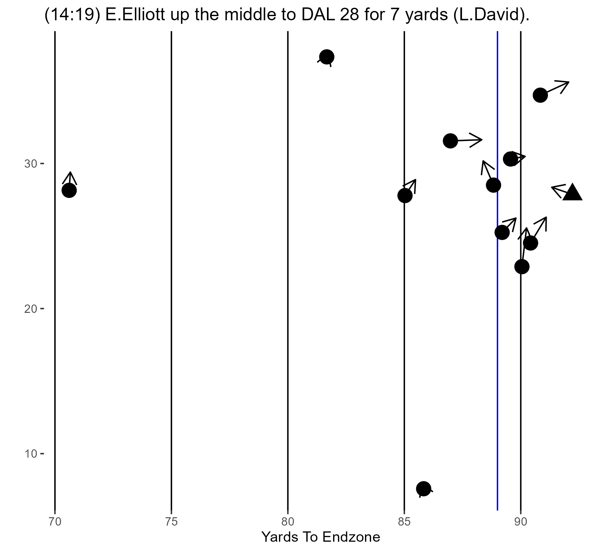
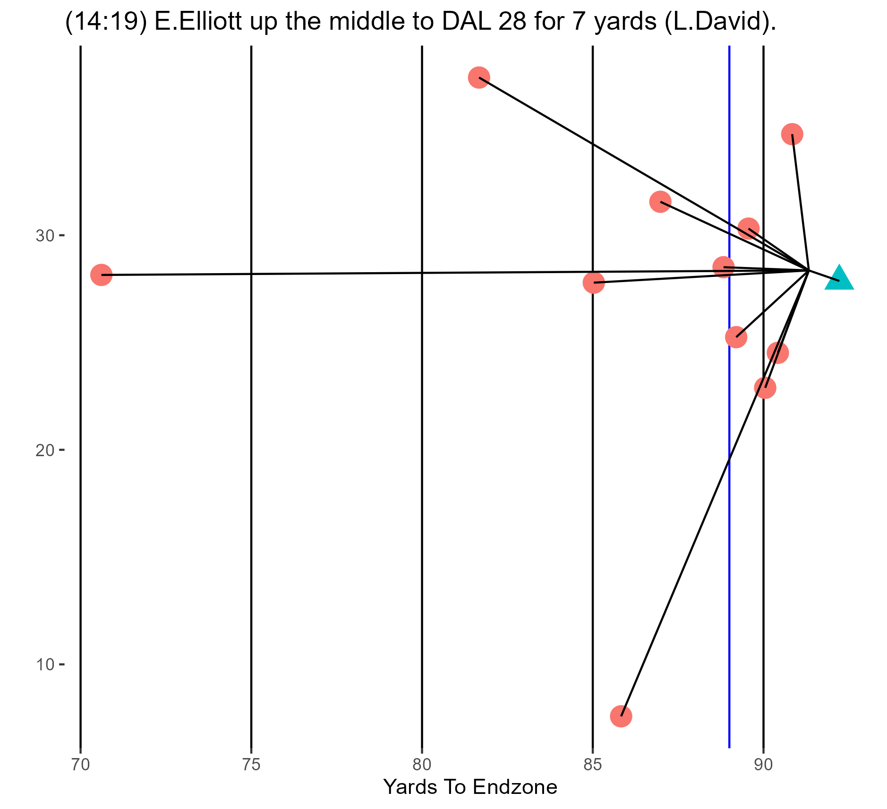
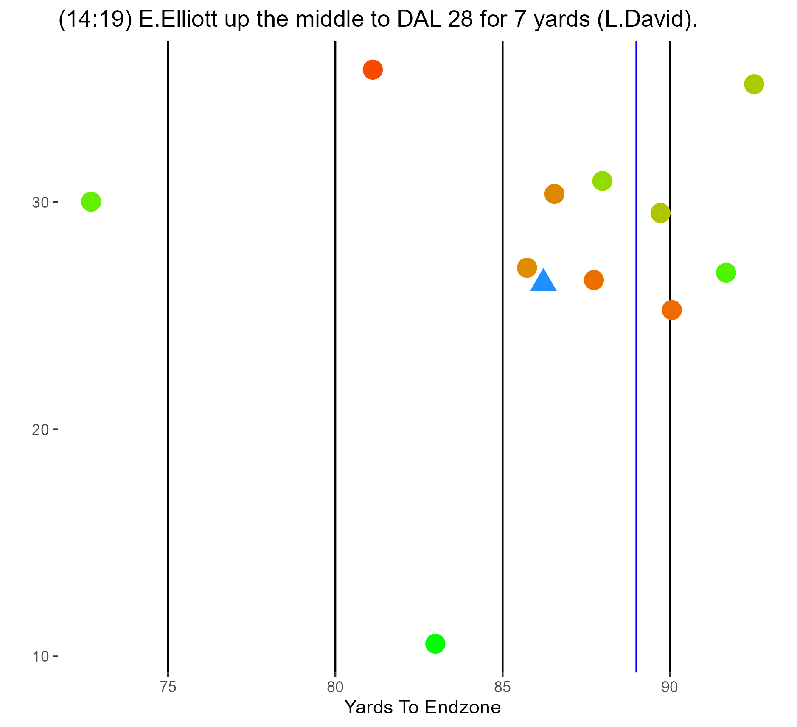
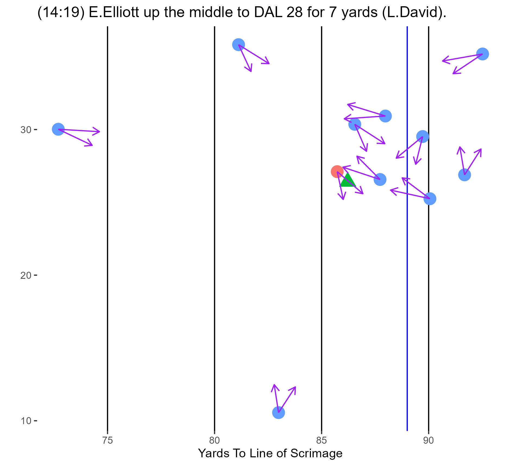
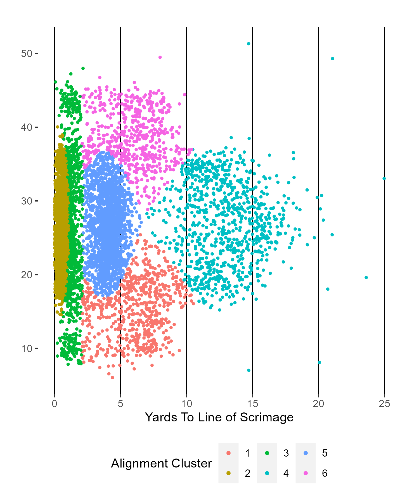
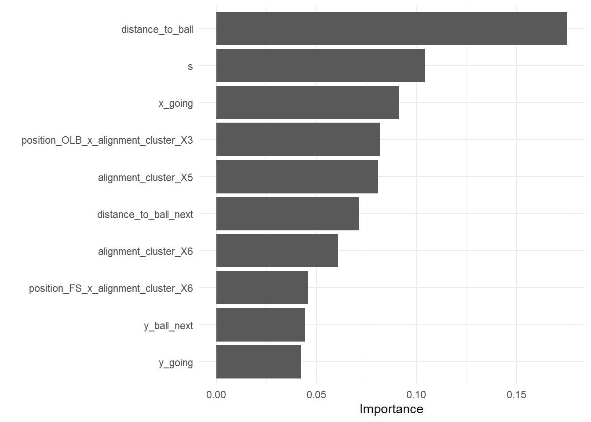
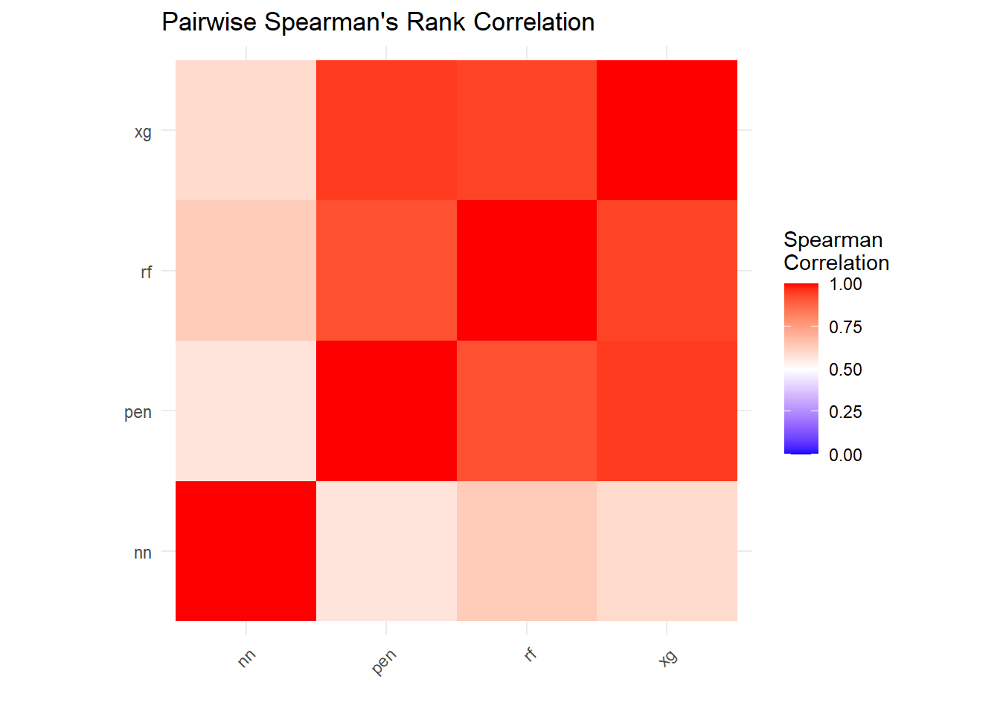

Quantifying Tackling in Football
A Data-Driven Approach Using the NFL Big Data Bowl Dataset and Advanced Machine Learning Techniques
Abstract
This study presents a novel approach to quantifying tackling effectiveness in football using advanced data analysis and machine learning techniques. Leveraging the NFL Big Data Bowl dataset, we develop models to predict and evaluate defensive players’ tackling probabilities during running plays. Our methodology combines penalized regression, random forest, XGBoost, and neural network models to calculate a ‘tackles over expected’ metric for each player. The findings provide insights into individual and team defensive performances, offering a data-driven perspective to inform coaching and player development strategies.
1 Introduction
Tackling in football is a critical skill influencing game outcomes and presents challenges in quantification due to the complex interplay of player dynamics and game situations. This study employs advanced data analysis and machine learning models to the NFL Big Data Bowl dataset with the objective of determining each defensive player’s probability of making a tackle during running plays and assigning a ‘tackles over expected’ value to quantify performance.
In recent years, football analytics has seen a significant transformation, largely influenced by the integration of data science and machine learning techniques. Some of the pioneering work in this field is in the book “The Hidden Game of Football” by Bob Carroll, Pete Palmer, and John Thorn1, which lays the groundwork for advanced statistical analysis in football.
The NFL Big Data Bowl competitions hosted on Kaggle have been instrumental in driving forward the field of sports analytics. These competitions have evolved over the years, each focusing on different aspects of the game:
- The NFL Big Data Bowl 20202 focused on predicting how many yards a player would gain after receiving a handoff.
- The NFL Big Data Bowl 20213 shifted the focus to evaluating defensive performance on passing plays.
- The NFL Big Data Bowl 20224 was centered around evaluating special teams’ performance.
- The NFL Big Data Bowl 20235 aimed to evaluate linemen on pass plays.
These competitions have collectively contributed to the enrichment of football analytics by providing developing innovative approaches to understanding and analyzing the game. This study draws from these diverse approaches, particularly focusing on tackling metrics, to further enhance the defensive strategy analysis in football.
2 Methodology
2.1 Data Sourcing
The extensive NFL Big Data Bowl dataset, hosted on Kaggle, includes detailed tracking data for the first nine weeks of NFL games. This dataset covers various play types, including run plays, pass plays, and quarterback scrambles, with data recorded every 0.1 seconds. The analysis specifically focuses on run plays during the first week of the 2022 NFL season, chosen to manage computational complexity and analyze a subset of the dataset in depth.
2.2 Feature Development
In order to prepare the data for analysis, I took the following steps to develop features that help indicate actions on the field that indicate an immanent tackle:
Data Loading and Initial Filtering: The dataset is comprised of five distinct sections, each detailing different aspects of the game. These sections included data on tackles, plays, player movements, and other game elements. I joined this information into a comprehensive dataset for analysis.
Data Transformation and Engineering
Rearranging Tackle Data: Converting position and tackle variables into factors.
Calculating the Ball’s Position and Attributes:
- Position: \(x_{\text{ball}}, y_{\text{ball}}\)
- Speed and direction: \(s_{\text{ball}}, \theta_{\text{ball}}\)
Creating Indicators for the Ball Carrier and the Football:
- Ball Carrier: Identifying the player with possession of the ball.
- Football: Distinguishing the football from the players.
- The figure below displays the Ball Carrier in red, the offensive players in blue, the defense in green, and the tackler in purple.

Figure 1: Ball Carrier Indicator Visualization Computing Distance to the Ball:
- Understanding player positioning relative to the football.
- Formula: \(d = \sqrt{(x_{\text{ball}} - x_{\text{player}})^2 + (y_{\text{ball}} - y_{\text{player}})^2}\)
- Figure 2 below visualizes the distance of each player to the ball.

Figure 2: Distance to Ball Visualization Projecting Future Locations of Players and the Ball:
- Estimating where a player and the ball will be in the future can help indicate who is in position to make a tackle.
- Player projection formula: \(x_{\text{future\_player}} = x_{\text{player}} + v_{x_{\text{player}}} \times \Delta t + \frac{1}{2} a_{x_{\text{player}}} \times \Delta t^2\), \(y_{\text{future\_player}} = y_{\text{player}} + v_{y_{\text{player}}} \times \Delta t + \frac{1}{2} a_{y_{\text{player}}} \times \Delta t^2\)
- Ball projection formula: \(x_{\text{future\_ball}} = x_{\text{ball}} + v_{x_{\text{ball}}} \times \Delta t + \frac{1}{2} a_{x_{\text{ball}}} \times \Delta t^2\), \(y_{\text{future\_ball}} = y_{\text{ball}} + v_{y_{\text{ball}}} \times \Delta t + \frac{1}{2} a_{y_{\text{ball}}} \times \Delta t^2\)
- Figure 3 below shows the projected future locations of players and the ball \(t = .5\) seconds from the current time. The dot is their current location and the end of the arrow is the projected location.
- Figure 4 shows the distance between the player and the projected location of the ball \(t=.5\) seconds from the current time.

Figure 3: Future Location Projection Of Players 
Figure 4: Future Distance Projection Generating ‘Approach Velocity’ Vector:
- Describing how players move relative to the ball’s trajectory can help us understand who is in position to make a tackle.
- The approach velocity vector measures the similarity between a player’s and the ball’s speed and direction.
- Figure 5 is a static view of the players’ approach velocity towards the ball.

Figure 5: Approach Velocity Visualization Creating an Orientation ‘Fan’:
- Determining if players are within a certain range of the ball can help determine who is in position to make a tackle.
- Figure 6 shows the orientation ‘fan’ indicating potential tackling zones. Players turn ‘red’ when the ball is within 3 yards and 60 degrees of the the way the defensive player is facing.

Figure 6: Orientation ‘Fan’ Visualization Classifying Defensive Alignments Using Clustering Techniques:
- Grouping players based on starting positions can help provide insight into pre-snap assignments.
- This can help a model infer player behavior and adaptability of defensive strategies against various offensive sets.

- Data Cleaning and Final Preparation:
- I addressed missing values through mean imputation for continuous values or by replacing unknown factor levels with an “unknown” level.
- I removed known irrelevant features from the data like jersey number and player name.
This comprehensive feature development process helped ensure the data was prepared for the different model types and we did not lose any information due to missingness.
- Feature Animations
Animations for all relavent features can be found at https://dustysturner.com/baylor/addm_final_presentation.html.
3 Model Building
In this section, I outline how I build the predictive models. Specifically, I detail division of the dataset into training, validation, and testing sets for robust evaluation and I provide baseline accuracies within the individual model descriptions below.
3.1 Computational Considerations
Several computational constraints impacted the modeling process. Limited computational resources dictated a more selective approach to parameter tuning and necessitated trade-offs for each model:
- Parameter Selection: The size of the grid to tune parameters had to balance between the ideal size of exploration and the practical limits of our computational resources.
- Data Splitting: The approach to splitting the dataset for training, testing, and validation was influenced by these constraints, particularly for the non-neural network models. These models were slower and could not handle as much data in the training set.
- Coding Language Variability: Employing both Python and R introduced an element of inconsistency in our data splitting process as each language split the data in a specific way. One might have desired to split the data into these partitions before changing languages, however, each model type required specific data manipulation, including imputation to be done after the data splitting process, which impacted variability between models.
Despite these considerations, I provide a robust modeling strategy that adapted to these limitations and yielded insightful results.
3.2 Penalized Regression
The Penalized Regression model employs regularization techniques to linear regression, preventing overfitting and improving prediction accuracy. Its simplicity and interpretability make it a valuable baseline for performance comparison in tackling probabilities.
- Data Split:
- Train: 19,426 rows (5% of the data)
- Validate: 4,114 rows (1% of the data)
- Test: 369,996 rows (94% of the data)
- Baseline Accuracy: 92.9%
- Best Parameters:
- Lambda: 1.1^{-4}
- Alpha: 0.6723358
- Model Interpretation: The model highlights the most impactful factors influencing tackling probabilities. We can see from Figure 8 below that the most impactful factors are interactions between pre snap alignment factors.
3.3 Random Forest
The Random Forest model is an ensemble method which builds multiple decision trees and merges their predictions. It is known for high accuracy and the ability to handle complex interactions, making it particularly effective in capturing the dynamic nature of football plays.
- Data Split:
- Train: 19,426 rows (5% of the data)
- Validate: 4,114 rows (1% of the data)
- Test: 369,996 rows (94% of the data)
- Baseline Accuracy: 92.9%
- Best Parameters:
- Mtry: 7
- Min_n: 6
- Trees: 278
- Model Interpretation: This model finds that player distance to the ball and projections on where the player and ball are going are highly impactful on predicting who will make the tackle was shown in Figure 9.

3.4 XGBoost
XGBoost is another ensemble method similar to a Random Forest except it stacks multiple decision trees based off of the predictions of previous trees. It is known for high accuracy and the ability to handle complex interactions, making it particularly effective in capturing the dynamic nature of football plays.
- Data Split:
- Train: 19,426 rows (5% of the data)
- Validate: 4,114 rows (1% of the data)
- Test: 369,996 rows (94% of the data)
- Baseline Accuracy: 92.9%
- Best Parameters:
- Trees: 219
- Min_n: 9
- Tree Depth: 1
- Model Interpretation: This model recognizes that a players distance to a ball as well as the speed of a player are the most impactful factors when predicting which defensive player will make a tackle. Figure 10 shows this in its top features.

3.5 Neural Networks
The Neural Network model, with a multi-layer architecture, is designed to capture complex patterns in high-dimensional data. It is particularly well-suited for analyzing the intricate patterns present in football play dynamics.
- Data Split:
- Train: NULL rows (70% of the data)
- Validate: NULL rows (15% of the data)
- Test: NULL rows (15% of the data)
- Baseline Accuracy: 92.92%
- Model Architecture:
- Layers:
- Three dense layers with 64 neurons each.
- Input shape specified for the first layer.
- Final output layer with a single neuron for binary classification.
- Activation:
- ReLU activation for the hidden layers.
- Sigmoid activation for the output layer.
- Regularization:
- L2 regularization with a factor of 0.001 applied to all layers.
- Batch Normalization:
- Applied after each dense layer to normalize layer inputs, stabilizing and accelerating training.
- Dropout:
- 30% dropout rate after each batch normalization to prevent overfitting by randomly deactivating neurons.
- Compilation:
- Optimizer: Adam.
- Loss function: Binary cross-entropy.
- Metric: Accuracy.
- Layers:
- Model Interpretation: This model excels in learning from complex data, offering the highest accuracy in our study for tackling probability predictions.
I executed each model over the entire parameter space and monitored accuracy. The neural network that yielded the best accuracy.
4 Results
4.1 Accuracy
The results of the several machine learning models are as follows:
| Model Type | Accuracy |
|---|---|
| Penalized Regression | 92.44% |
| Random Forest | 92.87% |
| XGBoost | 92.44% |
| Neural Network | 92.92% |
Among these models, the Neural Network, while only marginally more accurate, emerges as the most promising. This model, despite its lack of interpretability compared to others, indicates significant potential. With relatively little tuning, it already outperforms the other models. This suggests a higher ceiling for performance improvements, especially with more focused adjustments to its structure and parameters (discussed further in future work). The neural network’s ability to learn complex, non-linear relationships within the data, characteristic of in-game football dynamics, makes it a particularly suitable model for this study. Despite the marginal improvement in accuracy and interpretability challenges, its potential for enhanced performance with further tuning makes it the most promising model for future development in this area.
4.2 Comparative Analysis of Model Rankings
In addition to evaluating individual model performance and accuracy, an important aspect of our analysis involves comparing how each model ranks players. Understanding the similarity or disparity in player rankings across different models provides insights into the consistency of these models in evaluating player performance.
To conduct this comparative analysis, I employed the Spearman’s Rank Correlation Coefficient, a non-parametric measure that assesses how similar two lists are. This method identifies how similar the ranking orders are of the four models: Penalized Regression, Random Forest, XGBoost, and Neural Networks.

The heatmap visualization in Figure 11 illustrates the pairwise Spearman’s Rank Correlation coefficients among the models. A coefficient close to +1 indicates a high similarity in rankings, whereas a coefficient near -1 implies a strong inverse relationship. Coefficients around 0 suggest no correlation in the rankings between models.
This analysis reveals that the Penalized Regression, Random Forest, XGBoost are all fairly similar but the neural network, while still positivly correlated, is less similar than the others.
4.3 Tackles Above Expected
In addition to model accuracy, I used a Briar score methodology to evaluate predictions for each player in the hold-out set. By calculating an average Briar score for each player in each model based on predicted and actual outcomes, it helps assess which players are likely exceeding or not meeting the expected tackling metrics.
The tables below showcase the Briar scores for top and bottom performers from each model. A higher score indicates that a player performed better than expected, while a lower score suggests underperformance relative to predictions. These scores provide valuable insights into player performance relative to the models’ expectations.
As highlighted in the previous section, the three machine learning models provide similar results and the neural network does not overlap with any of them. More research is needed to determine what accounts for the differences.
| Penalized Regression | ||
| Accuracy: 92.68% | ||
| Name | TOE | Position |
|---|---|---|
| Talanoa Hufanga | 6.00 | SS |
| Jonathan Owens | 4.35 | FS |
| Cameron Jordan | 4.24 | DE |
| Kevin Byard | 4.14 | FS |
| Dre Greenlaw | −3.22 | ILB |
| Willie Gay | −3.26 | OLB |
| Cody Barton | −3.98 | MLB |
| Demario Davis | −4.56 | MLB |
| Random Forest | ||
| Accuracy: 92.87% | ||
| Name | TOE | Position |
|---|---|---|
| Talanoa Hufanga | 4.92 | SS |
| Maxx Crosby | 3.89 | DE |
| Jonathan Owens | 3.87 | FS |
| Cameron Jordan | 3.79 | DE |
| Xavier McKinney | −2.80 | FS |
| Demario Davis | −2.91 | MLB |
| Damien Wilson | −3.15 | MLB |
| Cody Barton | −3.76 | MLB |
| XG Boost | ||
| Accuracy: 92.44% | ||
| Name | TOE | Position |
|---|---|---|
| Talanoa Hufanga | 6.12 | SS |
| Jonathan Owens | 4.58 | FS |
| Maxx Crosby | 4.16 | DE |
| Cameron Jordan | 4.03 | DE |
| Damien Wilson | −3.66 | MLB |
| Christian Kirksey | −3.97 | OLB |
| Cody Barton | −5.08 | MLB |
| Demario Davis | −5.57 | MLB |
| Neural Net | ||
| Accuracy: 92.92% | ||
| Name | TOE | Position |
|---|---|---|
| Jonathan Owens | 6.10 | FS |
| C.J. Mosley | 3.74 | ILB |
| Jihad Ward | 3.69 | OLB |
| Grover Stewart | 3.45 | DT |
| Marcus Davenport | −1.04 | DE |
| Steven Nelson | −1.13 | CB |
| Marshon Lattimore | −1.14 | CB |
| Julian Love | −1.31 | SS |
5 Application and Implications
5.1 Performance Analysis
Under the assumption that each individaul model is correct, the development of the ‘tackles over expected’ metric introduces a concrete method for evaluating player performance. The higher the value of the player’s Briar score, the more tackles they make over expected. Essentially, any player with a high Briar score makes more tackles than the average player given a similar situation. A low Briar score indicates that a player makes less tackles than the average than a similar player in a similar situation.
5.2 Career Progression and Contract Negotiations
Beyond on-field strategy, the ‘tackles over expected’ metric serves as a crucial tool in decisions about player promotions, trades, or contract renewals. Its objective nature offers a solid foundation for contract negotiations, contributing to fair and informed decision-making regarding player valuation.
5.3 Enhancing Team Tactics
Teams benefit from these insights by enhancing their defensive strategies. The metric allows for an in-depth assessment of team and individual performances, enabling coaching staff to tailor strategies that maximize defensive effectiveness and overall team performance. When identifying players who have higher tackels over expected, this can help influence in-game decision making for coaches.
6 Limitations and Directions for Future Research
This study does face certain limitations that open avenues for future research. A primary limitation lies in the dataset’s focus on run plays from the first week of the 2022 NFL season, which might not capture the complete variability of player performances across different games, seasons, or play types. Expanding this research to encompass the entirety of the dataset, including various play types and additional seasons, could yield more accurate and generalizable results.
Another area for enhancement is the current model’s capability to fully capture the time-dependent dynamics of football plays. Future iterations of this research could greatly benefit from the implementation of advanced neural network models like LSTM (Long Short-Term Memory) or RNN (Recurrent Neural Network). These models, with their ability to account for temporal factors in player movements and actions, have the potential to refine our predictions and offer deeper insights.
Additionally, the study primarily relies on in-game performance data, which might overlook external factors influencing player performance. Integrating additional data sources, such as player fitness levels, weather conditions, and psychological factors, could provide a more nuanced understanding of tackling effectiveness. This holistic approach would not only enrich the insights gained but also contribute to a more comprehensive understanding of the game.
In summary, while this study lays a strong foundation for advancing our understanding of football analytics, these limitations highlight the potential for further research. By expanding the dataset, incorporating more complex time-dependent models, and integrating diverse data types, future studies can build upon this work to offer even richer insights into the world of football analytics.
7 Conclusion
This study represents a new advancement in football analytics by introducing the ‘tackles over expected’ metric, derived from a combination of advanced data analysis and machine learning methods such as penalized regression, random forest, XGBoost, and neural networks. This metric sheds new light on individual and team defensive performances, enhancing our understanding of football dynamics.
The insights gained hold significant implications for coaching strategies, player development, and game analytics, offering a data-driven basis for on-field and off-field decision-making. This work not only contributes to sports analytics but also opens new avenues for future research. Overall, this research underscores the transformative impact of data science in sports and sets the stage for further advancements in the field.
8 References
Carroll, Bob, Pete Palmer, and John Thorn. The Hidden Game of Football. Workman Publishing Company, 1988.
NFL Big Data Bowl 2020. Retrieved from Kaggle.
NFL Big Data Bowl 2021. Retrieved from Kaggle.
NFL Big Data Bowl 2022. Retrieved from Kaggle.
NFL Big Data Bowl 2023. Retrieved from Kaggle.
R Core Team (2023). R: A Language and Environment for Statistical Computing. R Foundation for Statistical Computing, Vienna, Austria. URL https://www.R-project.org/.
Wickham H, Averick M, Bryan J, et al. (2023). tidyverse: Easily Install and Load the ‘Tidyverse’. R package version 1.3.1. URL https://CRAN.R-project.org/package=tidyverse.
Thomas Lin Pedersen (2023). gganimate: A Grammar of Animated Graphics. R package version 1.0.7. URL https://CRAN.R-project.org/package=gganimate.
Apache Arrow community (2023). arrow: Integration to ‘Apache’ ‘Arrow’. R package version 8.0.0. URL https://CRAN.R-project.org/package=arrow.
Scrucca L, Fop M, Murphy TB, Raftery AE (2023). mclust: Gaussian Mixture Modelling for Model-Based Clustering, Classification, and Density Estimation. R package version 5.4.8. URL https://CRAN.R-project.org/package=mclust.
Kuhn M and Wickham H (2023). tidymodels: Easily Install and Load the ‘tidymodels’ Framework. R package version 0.1.4. URL https://CRAN.R-project.org/package=tidymodels.
Kevin Ushey, JJ Allaire, Yuan Tang, et al. (2023). reticulate: Interface to ‘Python’. R package version 1.24. URL https://CRAN.R-project.org/package=reticulate.
Selivanov D and Wang Q (2023). mltools: Machine Learning Tools. R package version 0.3.6. URL https://CRAN.R-project.org/package=mltools.
Dowle M and Srinivasan A (2023). data.table: Extension of
data.frame. R package version 1.14.2. URL https://CRAN.R-project.org/package=data.table.
Footnotes
Carroll, Bob, Pete Palmer, and John Thorn. The Hidden Game of Football. Workman Publishing Company, 1988. This foundational work provides an in-depth look into the statistical analysis of football, laying the groundwork for future analytical techniques in sports.↩︎
“NFL Big Data Bowl 2020.” Kaggle. https://www.kaggle.com/competitions/nfl-big-data-bowl-2020. This competition focused on predicting the number of yards a player would gain after receiving a handoff.↩︎
“NFL Big Data Bowl 2021.” Kaggle. https://www.kaggle.com/competitions/nfl-big-data-bowl-2021. The focus of this competition shifted to evaluating defensive performance on passing plays.↩︎
“NFL Big Data Bowl 2022.” Kaggle. https://www.kaggle.com/competitions/nfl-big-data-bowl-2022. Centered around evaluating special teams’ performance.↩︎
“NFL Big Data Bowl 2023.” Kaggle. https://www.kaggle.com/competitions/nfl-big-data-bowl-2023. Aimed at evaluating linemen on pass plays.↩︎